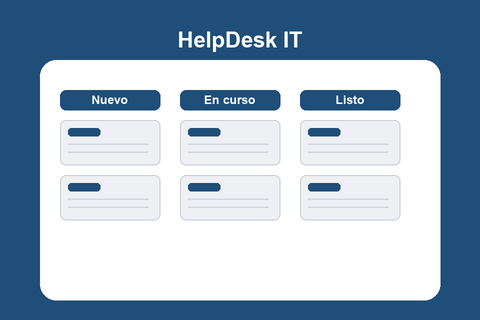

Reportar
El usuario completa un formulario con los datos de su incidencia y la envía en segundos.
HelpDesk IT centraliza el registro, la organización y el seguimiento de las incidencias técnicas de tu organización. Basta de pedidos perdidos entre correos y mensajes sueltos.
Reportar una incidencia
El usuario completa un formulario con los datos de su incidencia y la envía en segundos.
El ticket queda registrado y visible en el tablero, con su estado y prioridad actualizados.
El equipo técnico avanza el ticket entre columnas hasta darlo por resuelto.
Cada incidencia queda registrada con su historial de estado, evitando pedidos perdidos o duplicados.
Los niveles de prioridad permiten atender primero lo crítico y organizar el trabajo del equipo.
No requiere instalar software: funciona en cualquier dispositivo con conexión a internet.